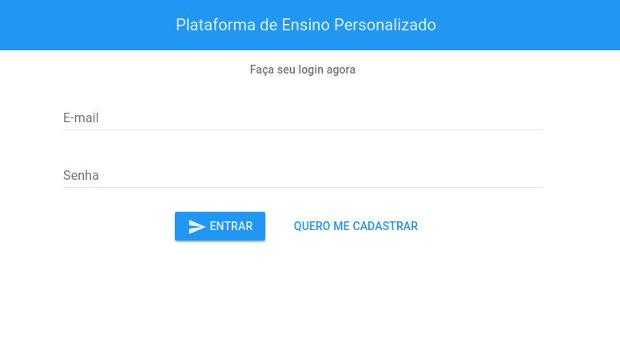
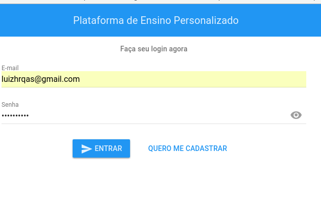
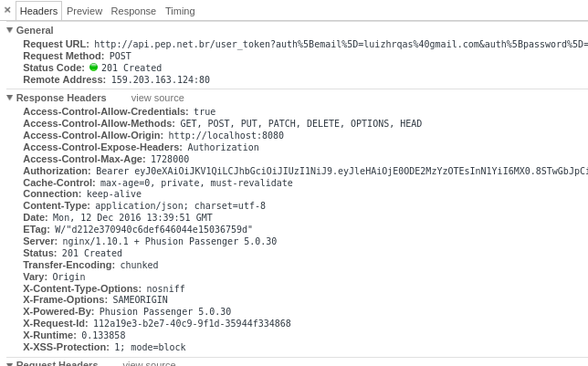
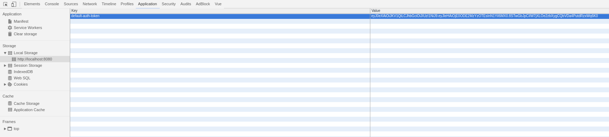
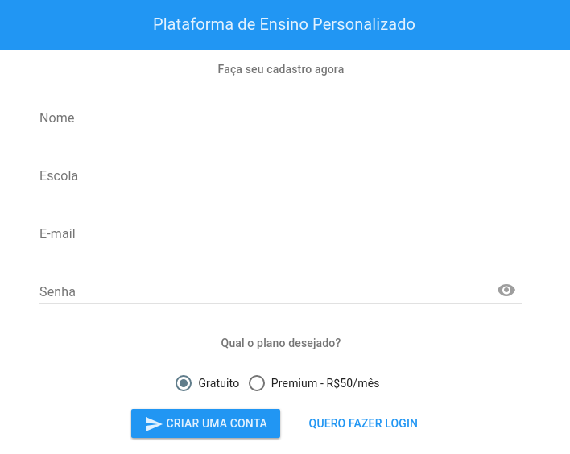

Agora que iniciamos nosso projeto, podemos fazer a próxima etapa que é inserir uma camada de Autenticação na nossa aplicação.
Para isto, será necessário:
- Ter uma rota de login
- Um formulário com e-mail e senha
- Uma API que tenha autenticação via JWT
Para a API, no próximo post explicarei como montar uma com Rails 5, mas por enquanto vou supor que você tenha uma já rodando, independente de linguagem.
Caso você não tenha nenhuma e queira prosseguir com o tutorial, você pode usar um serviço externo como Auth0.
Tela de login
Esta foi a tela que eu montei para seguir este tutorial:

Ela foi implementada com o Vue-Material, caso você queira reaproveitá-la, segue o código-fonte:
<div class="login">
<md-toolbar class="center-xs">
<div class="md-title">Plataforma de Ensino Personalizado</div>
</md-toolbar>
<div class="container">
<div class="row">
<div class="col-md-6 col-md-offset-3 col-xs-10 col-xs-offset-1 center-xs">
<md-subheader class="center-xs">Faça seu login agora</md-subheader>
<form v-on:submit="handleSubmit($event)">
<md-input-container>
<label>E-mail</label>
<md-input v-model="user.email"></md-input>
</md-input-container>
<md-input-container md-has-password>
<label>Senha</label>
<md-input type="password" v-model="user.password"></md-input>
</md-input-container>
<md-button type="submit" class="md-raised md-primary"><md-icon class="">send</md-icon> Entrar</md-button>
<router-link to="signup" tag="md-button" class="md-primary">Quero me cadastrar</router-link>
</form>
</div>
</div>
</div>
</div>export default {
name: 'login',
data () {
return {
user: {
email: null,
password: null
}
}
},
methods: {
handleSubmit: function () {
console.log(this.user)
}
}
}Variáveis de Ambiente
Caso estejamos no ambiente de desenvolvimento, a URL da nossa API será http://lvh.me:9001/.
Caso estejamos no ambiente de produção, a URL da nossa API será http://api.0e1dev.com/.
Para termos esta informação dinâmica na nossa aplicação, vamos preenchê-la nos arquivos de configuração.
Estes arquivos encontram-se em config/.
A ordem de prioridades desta pasta é:
1) prod.env.js 2) dev.env.js 3) test.env.js
Ou seja, se você definir uma constante somente no prod.env.js, o ambiente de desenvolvimento e testes irá herdar esta configuração.
// config/prod.env.js
module.exports = {
NODE_ENV: '"production"',
API: '"http://api.0e1dev.com/"'
}// config/dev.env.js
module.exports = {
NODE_ENV: '"production"',
API: '"http://localhost:9001/"'
}process.env.API.
Instalando vue-resource
Este é o componente que nós iremos utilizar para fazer as requisições AJAX.
$ npm install vue-resource --savemain.js e indique ao Vue que nós vamos usá-lo:
// src/main.js
import VueResource from 'vue-resource'
Vue.use(VueResource)
// Define a base da URL das requisições AJAX será
// a constante API que configuramos
Vue.http.options.root = process.env.APIEla é a vue-auth. Para instalá-la:
$ npm install @websanova/vue-authsrc/main.js.
Após nossa declaração de rotas, vamos fazer um monkeypatch para o vue-auth identificar nossas rotas:
Vue.router = routerVue.use(require('@websanova/vue-auth'), {
auth: require('@websanova/vue-auth/drivers/auth/bearer.js'),
http: require('@websanova/vue-auth/drivers/http/vue-resource.1.x.js'),
router: require('@websanova/vue-auth/drivers/router/vue-router.2.x.js'),
rolesVar: 'type',
loginData: {url: 'user_token', method: 'POST', redirect: '/', fetchUser: false},
fetchData: {url: 'auth/user', method: 'GET'},
refreshData: {url: 'auth/refresh', method: 'GET', atInit: false}
})Por que esse bando de require?
Este plugin é bem extensível, então ele trabalha sob o conceito de Drivers.
O autor fez isto principalmente para que o mesmo plugin possa suportar versões diferentes do Vue (1 e 2), e também para que a autenticação seja algo customizável caso assim desejado pelo desenvolvedor.
O plugin já vem com 3 drivers de autenticação: Basic, Bearer (o que nós vamos usar para fazer JWT) e Devise (usando devise-token-auth no Rails).
O que é esse rolesVar?
É o atributo que o plugin irá usar para definir os cargos do objeto do Usuário. Isso fará mais sentido depois.
O que é esse loginData?
É o endpoint que nós vamos consumir ao efetuar o login. Você pode alterar para a URL que quiser, assim como o método a ser usado.
O atributo fetchUser indica se nós queremos que após o login, ele recupere os dados do usuário. O padrão é true. Nós desabilitamos para não ter que criar nenhum endpoint extra na nossa API. Caso você tenha um endpoint que retorne os dados do usuário, basta deixar este parâmetro como verdadeiro, e apontar no fetchData qual é este endpoint.
O que é esse fetchData?
É o endpoint que nós vamos consumir os dados do usuário. Caso você queira recuperar o nome, por exemplo, ele usará este endpoint para recuperar esta informação.
No caso do fetchUser estar habilitado, após logar ele fará requisição a este endpoint também.
O que é esse refreshData?
É o endpoint que vai validar se o nosso token é válido ou não.

Eu não vou entrar muito no foco de como a API deve estar configurada para ele rodar corretamente, pois vai ficar para um outro post.
No caso nós vamos trabalhar com uma app com Rails 5 e a gem Knock. Ela nos permitirá adicionar uma camada de autenticação JWT de forma simples e leve. E por ser JWT, usar o Bearer Token, tem suporte nativo do vue-auth.
Um exemplo de action para este endpoint de refresh com o Knock:
include Knock::Authenticable
before_action :authenticate_user, only: [:refresh]
def refresh
render json: [], status: :ok
endCaso a requisição tenha um token inválido ou vazio, ele vai retornar 401 Unauthorized.
O Laravel tem um middleware chamado jwt.refresh, funciona da mesma forma.
Caso você esteja em dúvida quanto a esta parte do server side, você pode olhar o código de exemplo do autor do plugin.
Caso você queira usar o Devise, temos o Devise Token Auth que tem suporte nativo do vue-auth.
Duas coisas importantes de se esclarecer:

CORS
Você precisará ter o CORS habilitado na sua API.
Exemplo da minha configuração de CORS:
# config/initializers/cors.rb
Rails.application.config.middleware.insert_before 0, Rack::Cors do
allow do
origins '*'
resource '*',
headers: :any,
methods: [:get, :post, :put, :patch, :delete, :options, :head],
expose: ['Authorization']
end
endexpose. Ele é a peça-chave para a segunda coisa importante…
Token no Header
Além do CORS, TODAS suas requisições (inclusive a do login), devem incluir no cabeçalho o header Authorization.
PS: Para este header ser lido, seu CORS precisa expor ele.
Exemplo da minha action de Login:
def create
response.headers['Authorization'] = 'Bearer ' + auth_token.token
render json: auth_token, status: :created
endRequisição no formulário

Vamos voltar para o componente do Login, e refatorar o nosso handleSubmit():
methods: {
handleSubmit: function (e) {
e.preventDefault()
// Auth
this.$auth.login({
params: {auth: this.user},
success: function () {
console.log('Usuário logado com sucesso.')
},
error: function () {
console.log('Usuário e/ou senha inválidos.')
},
rememberMe: true,
redirect: '/signup'
})
}
}No caso da nossa aplicação de teste, a página de cadastro só deverá carregar para usuários logados.
E a página de login só deverá carregar para usuários não-logados.
Nossas rotas ficam assim então:
// src/main.js
// Routes
const routes = [
{
path: '/',
redirect: '/login'
},
{
path: '/signup',
component: SignUp,
meta: {auth: true}
},
{
path: '/login',
component: Login,
meta: {auth: false}
}
]meta.
Se a gente quisesse montar uma rota somente para 1 role em específico, seria:
// src/main.js
// Routes
const routes = [
{
path: '/admin',
component: Admin,
meta: {auth: 'admin'}
},
{
path: '/manager',
component: Manager,
meta: {auth: 'manager'}
}
]Testando nossa aplicação
Vamos para a tela de Login:

A requisição deverá ser semelhante a isto:

Agora, se você visualizar o Local Storage, terá algo semelhante a isto:

E é claro, nossa esperada tela de cadastro pós-login:

Conclusão

Espero que tenham gostado desta segunda parte da nossa série.
Os próximos posts falarão sobre:
- CRUDs com o Vue;
- Como montar uma API com Autenticação via JWT com Rails 5.
Fiquem ligados! :)